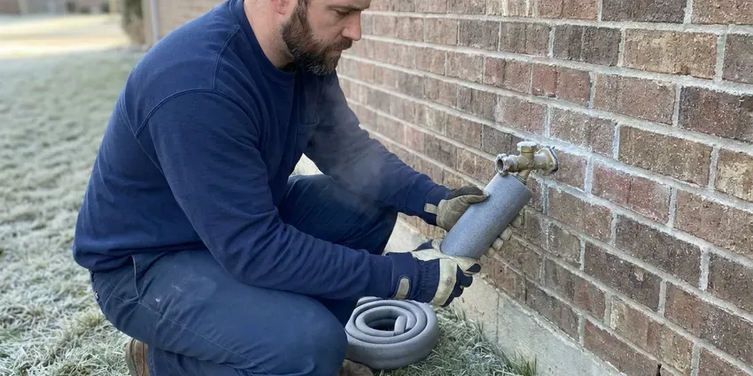

Drainage Services in Rutland, VT
Licensed plumbers at CKV Plumbing handle drainage across Rutland, VT, from sink clogs to sewer mains.
- Licensed and Insured Plumbers
- Yard & Storm Drainage
- Guaranteed Work
- Skilled Technicians

Dependable Drainage Service in Rutland, VT.
Slow drains and standing water get worse. Call (802) 209-5139.
Licensed Drainage Plumbers in Rutland, VT
Drainage problems in Rutland, VT tend to show up in two places, the pipes and the yard. Rocky glacial soil and ledge are common across Vermont, which can make digging for water lines, sewer repairs or septic work slow and costly. That ground movement can crack sewer lines and push water toward the foundation, which is why we look at both before quoting a fix for either one. Most of our calls begin inside.
Our expertise includes:
- French drains, channel drains and pop-up outlets for yard runoff
- Drain cleaning and clog clearing
- Downspout tie-ins, dry wells and grade corrections near foundations

Additional Plumbing Maintenance Services in Rutland, VT
Our maintenance and specialty plumbing services in Rutland, VT protect your home year-round and extend the life of every system.


Customers
Why Choose CKV Plumbing for Drainage Services in Rutland, VT?
Workmanship shows up years later. Properly bedded sewer pipe keeps its slope. Pipe set on loose fill sinks into a belly, so we bed it and compact the backfill.
- Storm Ready, Our yard drainage is sized for intense storms, not just light rain.
- Right Equipment, Cable machines, jetters, cameras and locators let us fix the cause, not the symptom.
- Local Knowledge, We know the drainage problems common in Rutland, VT, including old clay sewers and flat yards.
Citywide Coverage
Older neighborhoods around Rutland tend to have clay sewers with root problems. New subdivisions bring their own issues. Flat lots, compacted fill and builders' grading that sloped toward the house are the usual causes of yard water in newer tracts, and they are fixed with drains and regrading rather than pipe work.
Experienced Team
Plumbers on our drain trucks work on houses and commercial kitchens alike. Commercial grease lines are slow work. A restaurant line packed with hardened grease can take an hour of jetting in stages, and our technicians know to clean the line in short passes so the loosened grease does not plug the line farther down.
Safety-First Approach
Our technicians wear eye protection and gloves on every drain call. Sewer water is not clean water. We protect the floor and disinfect any surface sewage touched before we go.
Trusted Certified Rutland Plumbing Services Professionals
At CKV Plumbing, we take pride in licensed, certified plumbing services throughout Rutland, VT. Those papers on the wall mean something. Our plumbers hold recognized industry credentials, and they follow strict safety and quality rules on every repair, installation and maintenance call we run.
Call Us Now PHCC Plumbing Contractor Recognition
PHCC Plumbing Contractor Recognition Better Business Bureau (BBB) Accreditation
Better Business Bureau (BBB) Accreditation Angi Certified Pro
Angi Certified Pro ISO 9001 Quality Management Certification
ISO 9001 Quality Management CertificationIndoor and Outdoor Drainage in Rutland, VT
Sump Pump Services in Rutland, VT
A sump pump protects a basement or crawlspace from groundwater. Our test covers the float, the check valve and the discharge line. Never pipe it to the sewer. Many sump floods come from a blocked discharge line, not a dead pump.

Main Sewer Line Clearing in Rutland, VT
Several drains backing up at once points to the main line, not a single fixture. We clear it from the outside cleanout with a drum machine and a root-cutting head, then camera the whole lateral to the city tap. No cleanout? Adding one makes every future call cheaper.
Restaurant and Industrial Drain Service in Rutland
Restaurants and industrial buildings send heavier loads down their drains than homes do. Grease interceptors need pumping on a schedule. We jet kitchen lines between interceptor pumpings, clear floor sinks and trench drains, and keep a service log your health inspector can review if they ask about grease management.
Emergency Drainage Services in Rutland, VT
Sewage coming up a floor drain needs attention right away. Stop using water until we arrive. Our on-call plumbers clear the main line, check it with a camera, and disinfect the area around the drain, and if the line is broken we explain the repair options on the spot.
Kitchen, Bath and Laundry Drain Clearing in Rutland
Slow sinks, gurgling tubs and overflowing laundry standpipes usually come from grease, hair and lint. Some Vermont wells carry iron, manganese or other naturally occurring minerals, so a lab test is the first step before choosing treatment. Scale roughens the inside of old pipe so debris catches, and the same drain keeps clogging. A lint trap on the washer hose helps a lot.
Dry Well Installation in Rutland, VT
Where there is no place to discharge on the surface, a dry well lets water soak into deeper soil. It only works if the soil drains. A perc check comes first, then the well gets sized for the area it serves and set away from the foundation and septic.
Channel and Trench Drains in Rutland, VT
Driveways and patios that slope toward the house can send runoff straight into a garage or a door threshold. A trench drain cut into the concrete stops it. We saw-cut the slab, set a polymer or concrete channel with a grate rated for the traffic it will see, and pipe it in solid PVC to a safe discharge point away from the foundation.

Outdoor and Storm Drain Cleaning in Rutland
Area drains, catch basins and driveway trench drains fill with leaves and silt. A buried grate sends water across the yard, and the pipe under it fills with mud. We vacuum the basins and jet the lines. Fall cleaning helps most.
Drainage Plumbers Near Me in Rutland, VT
Local experience counts in drainage work because slope and soil change from one street to the next. Some soil barely drains. A dry well that works on sandy ground across town may fill and overflow on heavy clay, so we check how the soil drains on your lot before recommending a dry well over a daylight outlet.
Searching for drainage services near me in Rutland, VT usually means water is already where it should not be. We keep trucks nearby. That lets us clear a backed-up main the same day in most cases, and come back for a yard drainage site visit after the next rain so we can see exactly where the water runs.
CKV Plumbing at a Glance
- Fully licensed plumbing team covering Rutland, VT
- 24/7 emergency service with same-day scheduling
- Upfront, flat-rate pricing before work begins
- 4.8-star rated by 553+ Vermont customers
Rutland Map
Rutland Information
- Population
- 15,630
- Area codes
- Local
- Service area
- Rutland and towns within a 40 mile drive
- Nearby
- Middlebury, Barre, Montpelier, Bennington
Drain lines in Rutland, VT can narrow with scale and buildup. Some Vermont wells carry iron, manganese or other naturally occurring minerals, so a lab test is the first step before choosing treatment. Jetting clears what a cable leaves behind.
Expert Services
Reach out to CKV Plumbing for honest, reliable plumbing from people who know the trade in Rutland, VT.
Our Specialized Plumbing Services in Rutland, VT
At CKV Plumbing, we handle the full list of plumbing services across Rutland, VT. We go from leak detection all the way to full system installations, for homes and commercial buildings, and we do it quickly at a fair price. Here are the core services we offer:


How We Solve Drainage Problems in Rutland, VT
Our drainage process keeps disruption low, with a clear price up front.
Request a Quote
Call (802) 209-5139 to book a drain visit. We confirm the time by text.
On-Site Diagnosis
A licensed plumber assesses the drain, often with a camera, and explains the fix.
Clear & Clean
We cable or jet the drain based on what we find, then test the flow.
Frequently Asked Questions About Drainage Services in Rutland
Most basic drain clearing in Rutland, VT runs $150 to $500. Main lines cost more than sinks. Jetting costs more than cabling, and sewer repairs run from a few thousand for a spot fix to much more for replacement.
Yes, sewer line repairs and replacements in Rutland, VT usually require a plumbing permit and an inspection. Drain clearing does not. We handle the permit and locates, and the inspector sees the pipe before we backfill.
Store-bought cleaners rarely clear a real clog. They can make things worse. They sit in the trap, can damage pipe and joints, and leave caustic liquid for the plumber. A hand auger is the better tool.
Slow sinks and gurgling drains are the early signs. Sewer odor near a drain or cleanout often follows. In the yard, standing water a day after rain or washed-out mulch means the water has nowhere to go.
Most homes never need scheduled drain cleaning. A slow drain is the signal. Homes with root-prone sewers, old cast iron, or a kitchen that sends a lot of grease down the drain do better with a cleaning every 12 to 24 months, timed before the line slows to a crawl.
Yes, runoff that pools against the house can work against the foundation for years. Rocky glacial soil and ledge are common across Vermont, which can make digging for water lines, sewer repairs or septic work slow and costly. Getting roof water away from the walls with extended downspouts, a French drain, and soil graded to fall at least six inches over the first ten feet takes most of that stress off. Start with the downspouts.
We advise against it. Chemical cleaners can damage older pipe and metal traps. When they fail, the trap stays full of caustic liquid that the plumber has to deal with carefully.
Drain cleaning usually means a cable machine with a cutting head that bores through the clog. It works fast and costs less. Hydro jetting uses high-pressure water to scrub the whole pipe wall clean of grease, scale and roots, so it lasts longer but costs more and needs a pipe that is in good enough shape to take the pressure.
What People Are Saying About Our Plumbing Experts?

Laura S.
Our 40 gallon tank started leaking from the bottom after thirteen years. The tech hauled the old one out, set a new unit with a fresh expansion tank, and had hot water running in about four hours. He took the old tank with him too.
Water Heater Replacement · Middlebury, VT
Lisa C.
Water was pouring out from under the washing machine on a holiday weekend. CKV Plumbing talked me through closing the valves over the phone and had a plumber at the house within ninety minutes. It was a burst fill hose.
Emergency Plumbing · Shelburne, VT
Robert G.
The camera showed a full break in our clay sewer line near the street. CKV Plumbing replaced it with a trenchless pipe burst, so the only digging was two small pits in the yard. They let us watch the footage before and after.
Sewer Line Replacement · Montpelier, VT
Angela D.
Our sump pump quit during a storm and the water was an inch from the basement carpet. CKV Plumbing put in a new pump with a battery backup that same evening. We have had two heavy rains since. It kicked on both times.
Sump Pump · Rutland, VTJames P.
Our restaurant had a slow leak at the hand sink that was rotting the cabinet base. CKV Plumbing came in at six in the morning before prep, replaced the trap and both supply lines, and was packed up before my first cook clocked in.
Commercial Plumbing · Brattleboro, VTRachel N.
Hard water was leaving white crust on every faucet and our dishwasher was struggling. The tech tested the water, recommended a softener sized for a family of five, and installed it with a bypass valve in one afternoon. The spots on our glasses are gone.
Water Softener · Bennington, VT